Version 1.0 • © 2026 by Trevor Alyn
Stereozoom lets you view stereoscopic (3D) images on a stereo-capable display such as a 3D TV (via HDMI) or a pair of XREAL ONE glasses. You MUST have such a display device to use this app.
In order to work with this app, the display device must be capable of displaying half-width side-by-side stereo. See your display device's documentation to verify that it supports this mode.
NOTE: Some display devices may have built-in alignment adjustment. For example, some Sony 3D TVs have a 3D Depth Adjustment setting. I recommend that you turn off the device-based alignment adjustment (or, in the case of Sony's 3D Depth Adjustment, set it to zero). Stereozoom can handle the alignment on its own.
To be viewable in Stereozoom, JPEG and PNG files must be full-width side-by-side pairs with the left view on the left and the right view on the right, like an old stereoscope card. For example:
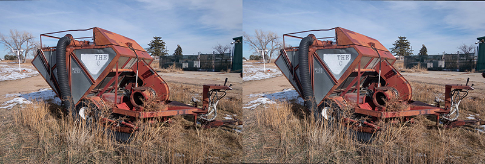
You can create such stereo pairs yourself with a 3D camera, or you can find them on the Internet. If you shoot left and right frames separately, you can combine them into stereo pairs with the fantastic free tool StereoPhoto Maker, which also includes batch automatic alignment tools.
Stereozoom also supports HEIC files that use Apple's spatial photos format.
To be viewable in Stereozoom, stereoscopic videos must be in half-width side-by-side format. Apple's spatial videos are also supported, but can be displayed only in 2D on macOS Sequoia.
The Root 3D Folder is the folder that contains all of your side-by-side stereo image files. These image files can be in subfolders of this folder, but the app will not be able to see anything that is outside of this folder.
IMPORTANT: When you first launch the app, you must select the folder that contains ALL of your stereoscopic images. Choose carefully! You can change it later, but if you do so, you run the risk of breaking links in the database and losing any adjustments and tagging.
Stereozoom is designed to be used with a macOS-compatible game controller. This is so that you can enjoy the stereo view without having a GUI in the way; you don't have to look away from the screen to use a game controller. To run the app with a game controller, simply pair the game controller with your Mac via Bluetooth, and then launch Stereozoom.
If you do not have a game controller, I recommend the Terios Wireless Controller (compatible with PS4).
If you have not used a game controller before, the app includes a Help screen for every mode, indicating what each control on the game controller does. To show the Game Controller Help, press the Options or Menu button on the game controller. Press it again to hide the Game Controller Help.
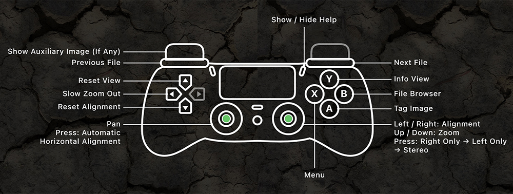
If your stereo display is connected to your Mac as a second monitor (over HDMI, for example), the Control Screen lets someone drive Stereozoom with the mouse from the Mac's own screen while the audience watches the stereo display. Choose Window > Show Control Screen (Command+K) to open it. Drag the main Stereozoom window onto the stereo display and make it full screen with its green button; macOS remembers where each window goes.
The Control Screen shows a live preview of the stereo display, either as the Left Eye alone or as a red/cyan Anaglyph of both eyes, and below it the controls for whatever the stereo display is showing right now. The controls change as you move between the File Browser View, the Menu, and the various app modes.
Every button shows its corresponding keyboard key. The Common Controls panel on the left contains controls that are common to most modes.
Buttons marked HOLD REPEATS repeat if you hold the mouse button down, the same way the game controller's buttons do.
Drag inside the Pan circle to pan the image around.
Drag the Alignment wheel left or right to change the horizontal alignment (if Manual Horizontal Alignment is turned on). Drag the Zoom wheel up or down to zoom in and out.
The Help and Edit Tags buttons at the top of the Control Screen let you view this Help file and edit the image tags you can apply to images. These functionalities are also available from the menu bar.
The Control Screen reopens at launch if it was open when you quit.
NOTE: If you close the main stereo window by mistake, choose Window > Show Stereo Window to bring it back.
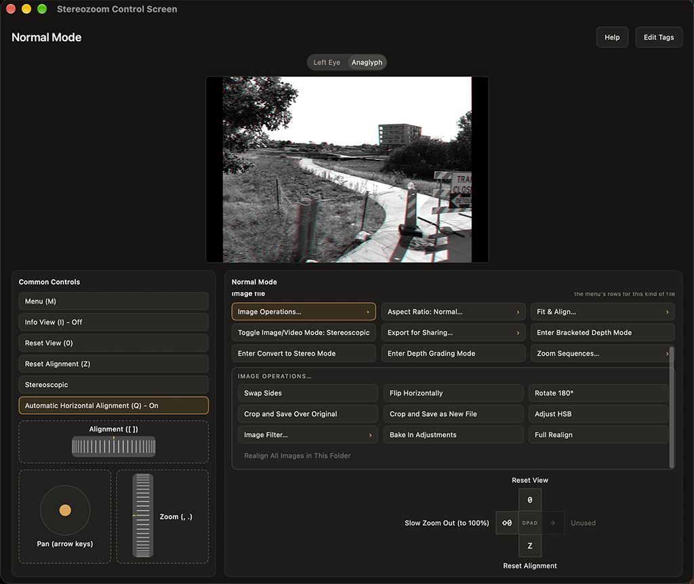
For basic stereo (3D) image viewing:
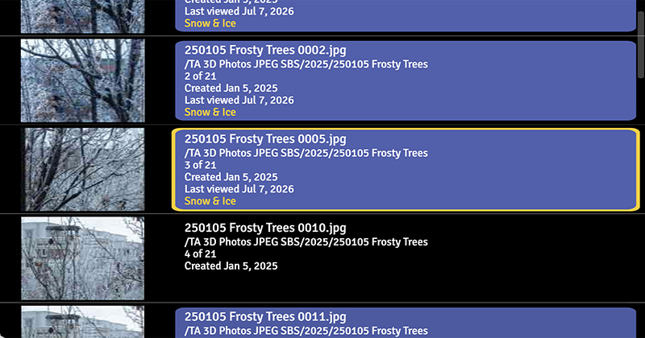
When you are viewing a stereo image, the following controls are available.
| Game Controller | Keyboard | Description |
|---|---|---|
| Right Shoulder button | P | Shows next image in folder. |
| Left Shoulder button | O | Shows previous image in folder. |
| Left Thumbstick up | Up Arrow | Shifts image up. |
| Left Thumbstick down | Down Arrow | Shifts image down. |
| Left Thumbstick to left | Left Arrow | Shifts image left. |
| Left Thumbstick to right | Right Arrow | Shifts image right. |
| Right Thumbstick up | . | Zooms in. |
| Right Thumbstick down | , | Zooms out. |
| Right Thumbstick to left | [ | Adjusts horizontal alignment left (if Manual Horizontal Alignment is turned on). |
| Right Thumbstick to right | ] | Adjusts horizontal alignment right (if Manual Horizontal Alignment is turned on). |
| DPad Up button | 0 | Resets the view to 100%. |
| DPad Down button | Z | Resets the alignment to zero. Then, if Automatic Horizontal Alignment is on, automatically aligns the current view. Hold the button down to open Menu > Preferences > Alignment. |
| DPad Left button | Shift+0 | Slowly zooms the view back to 100%. |
| X button | M | Shows the Main Menu. |
| A button (image file) | T, Enter | Shows the Tagging Menu so you can tag the active image file. |
| A button (video file) | T, Enter | Enters Stereo Video Playback Mode. |
| A button (Zoom Sequence file) | T, Enter | Plays back the displayed Zoom Sequence. |
| Y button | I | Shows/Hides the Info View at the bottom of the screen. |
| Left Thumbstick button | Q | Turns Automatic Horizontal Alignment on and off. |
| Left Trigger button (image file) | A | Toggles display of the Auxiliary Image (if any) for the current image. |
| Right Thumbstick button | L | Cycles through one-side-only modes, and then back to stereo mode. In one-side-only mode, one side of the stereo pair is shown in both views; this lets you compare the two sides of the image without having to remove your 3D glasses. |
| B button | F | Displays the File Browser View. |
| Options or Menu button | — | Shows a labeled drawing of the controller saying what each control does in the current context. While this diagram displays all other controls are blocked; you can press buttons on the game controller and see them highlight in the diagram without actually executing any commands. To close this view, press the Options or Menu button again. |
The File Browser View lets you navigate the file system inside your Root 3D Folder.
Keeping Your Place: When you quit or exit a folder, the app remembers the last file you viewed in that folder. If you return to the folder later, it will take you to that file.
Cell Background Color: Rows in the File Browser View that represent folders have a colored background that indicates how many image files in that folder have been viewed recently. The more image files there are in a folder that you haven't viewed in a long time (or have never viewed), the darker the background color. Folders with all-unviewed images have a black background. Similarly, rows for image files indicate how recently those files have been viewed by the brightness of their background color (brighter = viewed more recently). Note that this feature applies only to image files; the database does not keep track of video files.
Thumbnails: Thumbnail images for stereo image files show what the image looked like when the thumbnail was originally created. So, for example, if you apply an Image Filter or an HSB adjustment to an image and then go back to the File Browser View, the thumbnail will not show the updated image. To update the thumbnail, go to the Menu and choose Utilities > Clear Thumbnails for This Folder or Clear All Thumbnails. The next time you view the File Browser View, the thumbnails will be updated.
Folders with Many Files: The first time you open a folder with a large number of files, the loading indicator may display for quite a while. This is normal. After that, entering the folder will be much faster.
Caching: The app proactively loads the next and previous images to speed up navigation.
| Game Controller | Keyboard | Description |
|---|---|---|
| DPad Up button | Up Arrow | Moves up one file/folder. |
| DPad Down button | Down Arrow | Moves down one file/folder. |
| DPad Left button | Left Arrow | Moves up one folder level. |
| A button | Enter | Displays the current file, or enters the selected folder. |
| X button | M | Closes File Browser View and opens the Main Menu. |
| B button | Escape | Closes the File Browser View. |
| Options or Menu button | — | Shows a labeled drawing of the controller saying what each control does in the current context. While this diagram displays all other controls are blocked; you can press buttons on the game controller and see them highlight in the diagram without actually executing any commands. To close this view, press the Options or Menu button again. |
Proper alignment is critical to being able to enjoy a stereo image. Consequently, Stereozoom has a number of features for helping you to view misaligned images.
Horizontal alignment refers to how the left and right images overlap each other. In a perfectly aligned image, everything is sharp and you can see all the depth. However, in a poorly aligned image, it's hard to resolve the depth, and eye strain can occur. Horizontal alignment is especially important when you zoom in on a stereoscopic image, because different parts of the same image may require different horizontal alignment values.
There are three menu items related to horizontal alignment, all on the Alignment submenu:
The first two controls work in combination as follows:
When manually adjusting depth with the right thumbstick, remember that moving the thumbstick to the right brings the entire scene toward you, and moving it to the left pushes the entire scene away from you.
There are two options for Automatic Horizontal Alignment:
NOTE: I'm aware that Automatic Horizontal Alignment doesn't always work the way you expect. It's a complicated problem. I plan to keep working on it.
When you are zoomed in on an image, Automatic Horizontal Alignment can occasionally get "stuck" in a mode where all you see is a narrow, misaligned image. If this happens, just press DPad Down (keyboard Z) and the horizontal alignment will be reset. If the problem persists, consider turning Automatic Horizontal Alignment off for this image.
Vertical alignment may be necessary for images that were shot (for example) with two different cameras, scans of stereo slides with misaligned chips, or via cha-cha. Images shot with a 3D camera usually do not need to be vertically aligned.
To turn this feature on or off, navigate to Menu > Alignment > Automatic Vertical Alignment.
NOTE: The Vertical Alignment feature is not perfect, especially for images that also have rotational alignment issues.
NOTE: Ideally, try to use Automatic Vertical Alignment only with images that have visible vertical alignment problems. For images that are already mostly vertically aligned, the setting may cause misalignment.
NOTE: Vertical alignment corrections are baked into an image file if you have the app save or resave the current image. For example, if you use the Bake In Adjustments feature, any applied vertical alignment corrections are baked in along with any Image Filters or HSB Adjustments.
Rotational alignment may be necessary for images that were shot (for example) with two different cameras, scans of stereo slides with misaligned chips, or via cha-cha. Images shot with a 3D camera usually do not need to be rotationally aligned.
To turn this feature on or off, navigate to Menu > Alignment > Automatic Rotational Alignment.
NOTE: The Automatic Rotational Alignment feature is currently problematic. It may improve in future versions, but for now, try to use Automatic Rotational Alignment only with images that have visible rotational alignment problems. For images that are already mostly rotationally aligned, the setting may cause misalignment.
NOTE: Rotational alignment corrections are baked into an image file only by Full Realign and Realign All Images in This Folder (in the Image Operations submenu), and when you save a stereo pair in Traveling Stereo Mode or Bracketed Depth Mode. In each case the rotation is measured again on the full-resolution images, and only if Automatic Rotational Alignment is on. Bake In Adjustments and the Crop commands do not apply a rotational correction.
Most files in a stereo collection are likely stereoscopic: a left-eye view and a right-eye view in one file. However, some may be monoscopic (for example, if you are using Bracketed Depth Mode).
Because monoscopic and stereoscopic files can be mixed together in the same folder, Stereozoom must try to figure out which kind each file is automatically. However, there currently is no foolproof way to do this, so Stereozoom allows you to override this decision for individual files.
Stereozoom checks the following, in order, and stops at the first one that gives an answer:
Videos are checked the same way, using their first frame. (Videos have no stereo metadata, so the first step never applies to them.)
The folder vote. When you enter a folder for the first time, Stereozoom checks the first five files, and sets a monoscopic or stereoscopic flag on the folder according to the majority (in other words, it assumes that the rest of the files in the folder are the same type as most of those five). In a folder with fewer than five files, every file is checked, and a tie results in the folder's flag being stereoscopic. Until the flag is set, each file is displayed according to its own check. A folder's mono/stereo flag is saved between launches.
A file that is flagged as monoscopic is always displayed with zero horizontal alignment, because the two eyes are showing the identical image. Operations that need two separate halves (such as Swap Sides, both Crop commands and Full Realign) are greyed out in the Image Operations Submenu, and Depth Grading Mode is not available.
If a file is displayed the wrong way, open the Main Menu (X button or keyboard M) while it is displayed and choose Toggle Image/Video Mode. The menu item shows the file's current flag (Monoscopic or Stereoscopic), and each time you choose it, the file switches to the other one. The item appears only for image and video files, and only while you are browsing normally (not in one of the special modes).
NOTE: This change is temporary. It's not saved, and it's lost as soon as the file is reloaded (for example, once you have navigated far enough away from it, or after an image operation). It also doesn't change the folder's vote. To fix a whole folder permanently, refresh the folder's flag instead, as described below.
If a whole folder is being displayed the wrong way (for example, because you replaced its monoscopic photos with stereoscopic pairs, or because the first few files you viewed were not typical of the rest), open the Main Menu and choose Utilities > Clear Mono/Stereo Flag for This Folder. Stereozoom discards the folder's mono/stereo flag, deletes the folder's cached thumbnails, and checks the displayed files again. A new vote then begins, and the folder's flag is settled again once five more files have been checked.
Only the current folder is affected. Each subfolder has its own flag.
To display the Tagging Menu for an image, press the A button (keyboard T) while an image is displayed. (Only image files can be tagged.)
To navigate to a tag, use the DPad Up and DPad Down buttons or the keyboard Up and Down Arrow keys. To apply a tag, highlight it and press A (keyboard Enter); press A again to remove it. Applied tags display in yellow.
The Tagging Menu can have up to three sections, from top to bottom: SESSION TAGS (see Session Tags), FREQUENTLY USED TAGS (see Most Frequently Used Tags) and ALL TAGS, which lists every tag. The first two appear only when they are turned on and have something in them.
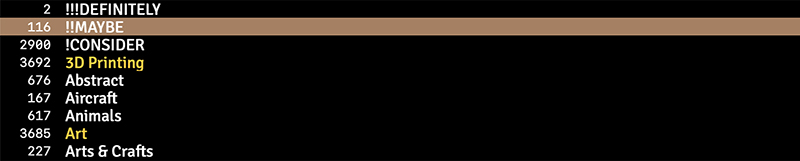
You can use this menu to assign as many tags as you like to the image. Assigned image tags display in the bottom of the Info View (Y button or keyboard I) and the File Browser View (B button or keyboard F).
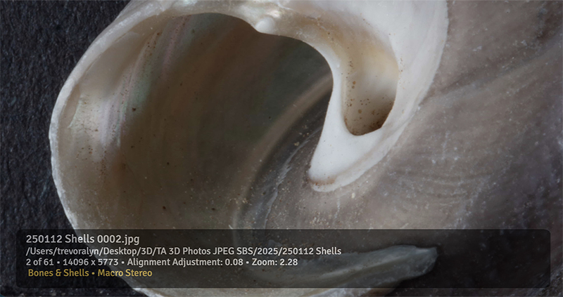
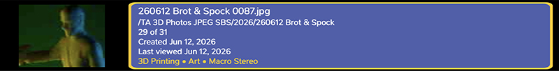
Tags can be organized into a hierarchy: any tag can have a parent tag, and a parent can have any number of child tags, which can have children of their own. For example, you might put "Beach", "Mountains" and "Desert" under a parent tag called "Landscapes". You set a tag's parent in the Edit Image Tags view.
In the ALL TAGS section of the Tagging Menu, only the top-level tags are shown at first. A tag that has children is marked with ▸:
Each tag in the hierarchy is a tag in its own right. Applying a child tag does not apply its parent, and applying a parent does not apply its children. The Session Tags and Frequently Used Tags sections, and the tag list used for browsing by tag, are flat lists that show no hierarchy. When you browse by tag, selecting a parent tag matches only images that have that tag itself, not its children.
Two tags in different branches can have the same name; they are still separate tags.
The app comes with a default set of image tags, but you can delete them and create your own. To edit the list of tags, click Edit Tags at the top of the Control Screen, or choose Tags > Edit Tags… from the Mac's menu bar. The Edit Image Tags view opens on the Control Screen. It is a flat, mouse-and-keyboard view rather than a stereo one, so it stays off the stereo display, which keeps showing the picture.
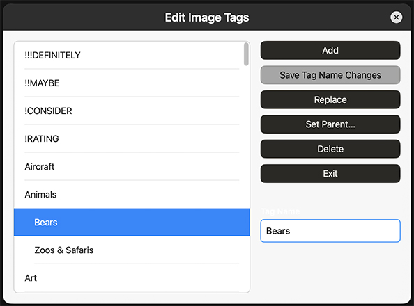
The list on the left shows the hierarchy, with child tags indented beneath their parents.
When you are done making changes, click Exit.
Once you have tagged a number of images, you can go back and view only images that have particular tags applied to them. To use this feature, navigate to Menu > Browse By... to display the Browse By submenu.
In browse-by-tag mode, you can navigate through the list of matching images with the File Browser View. You can also navigate through the matching images with the Left Shoulder button (keyboard O) and Right Shoulder button (keyboard P).
To exit browse-by-tag mode, navigate to Menu > Browse By... Browse File System.
If the Frequently Used Tags feature is on, up to 20 of your most-used tags display near the top of the tagging menu, in a section titled FREQUENTLY USED TAGS with a dark blue background, ordered top-to-bottom from most-used to least-used. The full list of tags displays below this section.
To turn this feature on or off, navigate to Menu > Preferences > Advanced > Show Frequently Used Tags.
If the Session Tags feature is on, tags that you have applied during this session display at the very top of the tagging menu, in a section titled SESSION TAGS with a dark green background, ordered top-to-bottom from least-used to most-used in this session. This can speed up tagging if you have a large set of related images. Session tags are cleared when you quit the app.
NOTE: If the list of Session Tags gets too long, you can choose Menu > Clear Session Tags.
To turn this feature on or off, navigate to Menu > Preferences > Advanced > Show Session Tags.
If you navigate to Menu > Image Operations > Image Filter..., the app displays a list of Image Filters that you can apply to the active image.
NOTE: Image Filters and HSB adjustments do not alter the original image. Instead, they are saved in the database and applied to the image again the next time you display it. If you want to bake in Image Filters and HSB Adjustments, choose Menu > Image Operations > Bake In Adjustments.
If you navigate to Menu > Image Operations > Adjust HSB, controls display at the top of the screen that allow you to adjust the image's hue, saturation, brightness, and gamma.
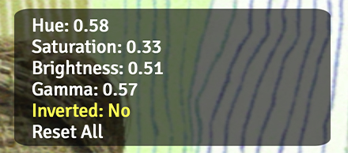
Use the DPad Up and Down buttons (keyboard up and down arrow) to navigate between the options:
When you're happy with the way the image looks, press B (keyboard Enter).
NOTE: Image Filters and HSB adjustments do not alter the original image. Instead, they are saved in the database and applied to the image again the next time you display it. If you want to bake in Image Filters and HSB Adjustments, choose Menu > Image Operations > Bake In Adjustments.
| Game Controller | Keyboard | Description |
|---|---|---|
| DPad Up button | Up Arrow | Moves the selection up. |
| DPad Down button | Down Arrow | Moves the selection down. |
| Right Thumbstick to left | Left Arrow (for fields other than Inverted) | Reduces the value (for fields other than Inverted). |
| Right Thumbstick to right | Right Arrow | Increases the value (for fields other than Inverted). |
| A button | Left or Right Arrow or X key | Toggles Inverted field value when that field is selected, or resets all adjustments if the Reset All field is selected. |
| B button | Return | Saves all values and exits HSB Adjustment Mode. |
| X button | R | Resets the selected option's value to default. |
| Y button | I | Shows or hides the Info View. |
| Options or Menu button | — | Shows a labeled drawing of the controller saying what each control does in the current context. While this diagram displays all other controls are blocked; you can press buttons on the game controller and see them highlight in the diagram without actually executing any commands. To close this view, press the Options or Menu button again. |
Stereozoom lets you crop images to the following aspect ratios:
If you want to select an aspect ratio before cropping, navigate to Menu > Aspect Ratio... and choose the desired option. Then, zoom and pan the view until it shows what you want the cropped image to look like. Next, choose Menu > Image Operations > Crop and Save as New File or Menu > Image Operations > Crop and Save Over Original.
NOTE: Any applied alignment adjustments are baked into an image file when you crop it.
IMPORTANT: Any applied Image Filters and HSB adjustments are NOT baked into to the cropped file. If you want to bake them into the cropped file, select it after the crop and choose Menu > Image Operations > Bake In Adjustments.
If the Session Commands feature is on, menu commands that you have recently chosen in certain menus display at the very top of their menus with a dark green background. This can speed things up if you are using a given command repeatedly. Session commands are cleared when you quit the app.
To turn this feature on or off, navigate to Menu > Preferences > Advanced > Show Session Commands.
I originally built this app to view scans of cardboard-mounted stereoscopic slides from the 1950s. Sometimes these slides have writing on them, so I scan the slide mount as well as the image. This feature lets you view such a mount scan in the app.
To use this feature:
Note that if you have multiple folders with auxiliary images, you will need an "!AuxiliaryImages" folder in each of them.
Stereo Video Playback Mode lets you view side-by-side half-width stereo video in 3D. You can pause, fast-forward, reverse, move forward or backward in slow motion, zoom, pan, and make stereo pairs from the current view.
To enter Stereo Video Playback Mode, navigate to a video file in the File Browser view and press the A button (keyboard Enter) to display the video file. Then open the Main Menu (X button or keyboard M) and choose Enter Stereo Video Playback Mode. The video begins playing immediately.
Spatial video in .mov format is supported.
Picking up where you left off: The app remembers where you stopped watching each video and resumes from that point the next time you play it. If you watch a video all the way to the end (or stop within the first few seconds), the saved position is cleared and the video starts from the beginning next time.
Progress bar: A thin bar along the bottom of each view shows your current position in the video.
The fast-forward and fast-reverse options go up to 120x, which is fast enough to move through an hour-long video in about half a minute. Not every Mac can decode and draw video that quickly, so above a certain speed (depending on your Mac and on the video file), Stereozoom stops trying to draw frames at all and scans instead.
While the video is scanning, the last drawable frame stays on the screen, but the progress bar along the bottom keeps updating. A message at upper right says "Scanning [speed]".
To exit scanning, press the A button or the spacebar.
NOTE: Stereozoom works out which speeds your Mac can draw by measuring them the first time it tries to play a video. To clear this setting, navigate to Menu ▸ Utilities ▸ Reset Video Speed Limit; the app discards the current value and measures again the next time you play a video.
| Game Controller | Keyboard | Description |
|---|---|---|
| A button | Spacebar | Pause or play video. Pressing this while the video is scanning (see below) stops it there and shows you the frame it landed on. |
| Right Trigger button when video is playing or scanning | L | Fast-forwards the video. Press once for 2x, again for 6x, then 20x, 30x, 120x, and once more to return to normal play. All six speeds are available on every Mac, but not every Mac can show the video at all speeds — see Scanning below. |
| Right Trigger button when video is paused | L | Plays the video in slow motion. Press once for 2fps, again for 6fps, again for half of the default frame rate, and again to return to paused. |
| Left Trigger button when video is playing or scanning | K | Fast-reverses the video, through the same ladder of speeds: 2x, 6x, 20x, 30x, 120x, then normal-speed reverse. Not every video format can be played backwards with a picture; the ones that cannot are scanned instead, so reverse always works. |
| Left Trigger button when video is paused | K | Plays the video in reverse in slow motion. Press once for 2fps, again for 6fps, again for half of the default frame rate, and again to return to paused. |
| Right Shoulder button | J | If the video is paused or scanning, advances the video by one frame. Does nothing while the video is playing. |
| Left Shoulder button | H | If the video is paused or scanning, moves the video backward by one frame. Does nothing while the video is playing. |
| DPad Up button | R | Resets the zoom and pan. |
| DPad Left button | \ | Saves the current view of the current frame as a stereo pair, in the same folder as the video file. The current crop, zoom, and alignment are baked into the saved image. This works whether the video is playing or paused. |
| Left Thumbstick | Arrow keys | Pans the video. |
| Right Thumbstick up/down | . and , | Zooms in and out. |
| Right Thumbstick left/right | ] and [ | Adjusts the alignment (if Manual Alignment is on). |
| Y button | I | Shows/hides the Info View at the bottom of the screen. |
| B button | Escape | Asks whether to exit Stereo Video Playback Mode. Press the A button (keyboard A) to confirm and leave Stereo Video Playback Mode, or the B button (keyboard B) to keep watching. |
| Options or Menu button | — | Shows a labeled drawing of the controller saying what each control does in the current context. While this diagram displays all other controls are blocked; you can press buttons on the game controller and see them highlight in the diagram without actually executing any commands. To close this view, press the Options or Menu button again. |
A Zoom Sequence is a saved sequence of framings (zoom, pan offset, and horizontal alignment) for one or more stereo images. When you play a Zoom Sequence back, the app smoothly animates from one framing to the next. You can play a Zoom Sequence in the app, and you can render a Zoom Sequence as side-by-side or spatial (MV-HEVC) stereo video. After you create a Zoom Sequence, you can edit the timing of each step, and even combine several Sequences into one.
Zoom Sequences are saved as JSON files in a folder named "Zoom Sequences" at the root of your Root 3D Folder. Each Zoom Sequence file appears in the File Browser View alongside your other files.
NOTE: Any Image Filter or HSB adjustment saved for an image is applied during playback and rendering of a Zoom Sequence.
To create a Zoom Sequence:
To abandon a capture in progress, navigate to Menu > Zoom Sequences... > Cancel Zoom Sequence and confirm.
NOTE: While you are capturing a Zoom Sequence, do not go to a different image file, because the Zoom Sequence's steps belong to the image you started with. Pan, zoom, alignment, the Info View (Y) and the Left Thumbstick button (Automatic Horizontal Alignment on/off) work as usual during capture, but several controls change:
| Menu Item | Keyboard | Description |
|---|---|---|
| Menu > Zoom Sequences... > Save Step | S | Saves the current zoom / offset / alignment as a step in the active Zoom Sequence. |
| Menu > Zoom Sequences... > Undo Last Step | U | Undoes the last step you captured. |
| Menu > Zoom Sequences... > Save Zoom Sequence | F | Finishes the Zoom Sequence and saves it to the "Zoom Sequences" folder. |
| X button (opens the Zoom Sequences menu) | M | While capturing, opens the Zoom Sequences menu directly instead of the top level of the menu. |
| B button | B | Does nothing while capturing, other than cancelling a dialog. It does not open the File Browser View. |
When you display a saved Zoom Sequence file from the File Browser View, press the A button (keyboard T or Enter) to play it back immediately, or navigate to one of these commands:
While a Zoom Sequence renders, a progress bar displays along the bottom. A loading indicator displays if a new image needs to load, and while the video file is being finalized at the end.
During playback or rendering, all input is suspended except the B button (keyboard Escape), which cancels and returns the image to its normal view. A cancelled render discards its partial video files.
Each step in a Zoom Sequence has three timing values, in seconds:
NOTE: On the first step of a Zoom Sequence, only the Delay Before value applies.
To edit these values, display a saved Zoom Sequence, then navigate to Menu > Zoom Sequences... > Edit Zoom Sequence. A stereoscopic editor overlays the Sequence, previewing the current step's framing on the image. Use DPad Left and DPad Right (left and right arrow keys) to move between the timing fields, and DPad Up and DPad Down (up and down arrow keys) to change the selected value by one second at a time. Delay Before and Delay After can go as low as zero seconds; Duration cannot go below one second.
To preview your changes without leaving the editor:
When you are done, press the B button (keyboard Escape). You are asked whether to save your changes: press A to save, or B to discard them. Either way, you return to normal viewing.
| Game Controller | Keyboard | Description |
|---|---|---|
| DPad Left button | Left Arrow | Moves to the previous timing field. |
| DPad Right button | Right Arrow | Moves to the next timing field. |
| DPad Up button | Up Arrow | Increases the selected value by one second. |
| DPad Down button | Down Arrow | Decreases the selected value by one second. |
| Left Shoulder button | G | Previews the previous / current / next step in place, then returns to editing. Press again during the preview to stop it early. |
| Left Trigger button | P | Previews the entire Sequence in place, then returns to editing. Press again during the preview to stop it early. |
| B button | Escape | Shows the "Save changes?" confirmation (A saves, B discards), then returns to normal viewing. |
| Options or Menu button | — | Shows a labeled drawing of the controller saying what each control does in the current context. While this diagram displays all other controls are blocked; you can press buttons on the game controller and see them highlight in the diagram without actually executing any commands. To close this view, press the Options or Menu button again. |
You can join several existing Zoom Sequences into a single, longer Zoom Sequence that plays through all of their images in order. To do this, navigate to Menu > Zoom Sequences... > Combine Zoom Sequences... (available when at least two Zoom Sequence files are present). A list of all your saved Zoom Sequences displays.
Select two or more Zoom Sequences in the order you want them to play; each one you select is highlighted. Then select Save Combined Zoom Sequence at the bottom of the same list (it shows how many Sequences you have selected). The combined Zoom Sequence is saved in the "Zoom Sequences" folder, named after the first image, plus a count of the additional images (for example, "Beach + 2 more").
Traveling Stereo Mode lets you create side-by-side full-width stereo pairs from video files where the camera is traveling sideways. This is useful, for example, if you have drone video that is traveling horizontally.
The controls are similar to those for Bracketed Depth Mode. There are three important ideas to understand:
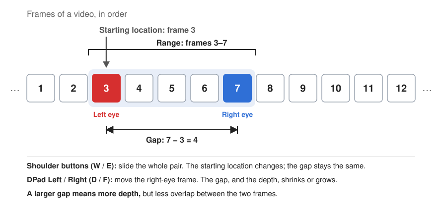
You can see both the numbers of the first and last frames in the range and the gap between them at the top of the screen:
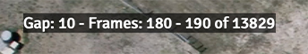
To enter Traveling Stereo Mode, navigate to the video file in the File Browser View and press the A button (keyboard Enter) to display it. Then navigate to Menu > Enter Traveling Stereo Mode.
NOTE: Spatial (MV-HEVC) video cannot be reencoded; the app says so and enters the mode on the original.
Once you are in Traveling Stereo Mode:
The frame-stepping buttons repeat if you hold them down, so you can travel through a long video quickly. A thin progress bar along the bottom shows where you are in the video.
If Automatic Horizontal Alignment is on, the app re-aligns the pair as you change frames, and again as you pan and zoom. If you hold down a button to make it fast-repeat, Automatic Horizontal Alignment is suspended until you release it.
NOTE: Panning and zooming affect only what you see on screen; a saved stereo pair is always the full, uncropped frame at full resolution.
When you enter Traveling Stereo Mode, you have the option of reencoding the video first. Reencoding the video makes it faster to access specific frames and can speed things up if you are using a large gap. However, it can take a long time, and it should usually be unnecessary. If you want to reencode the video before you enter the mode, press X (keyboard X) when the confirmation dialog displays. The reencoded video is automatically deleted when you exit Traveling Stereo Mode.
| Game Controller | Keyboard | Description |
|---|---|---|
| Right Trigger button | R | Moves the frame range ahead 30 frames, or to the end of the clip if fewer than 30 frames remain. |
| Right Shoulder button | E | Moves the frame range ahead 1 frame. |
| Left Trigger button | Q | Moves the frame range back 30 frames, or to the start of the clip if fewer than 30 frames remain. |
| Left Shoulder button | W | Moves the frame range back 1 frame. |
| DPad Right button | F | Increments the highest-numbered frame (increases depth). |
| DPad Left button | D | Decrements the highest-numbered frame (reduces depth). |
| DPad Up button | C | Resets the view to 100%. |
| DPad Down button | Z | Resets the horizontal alignment to zero, then, if Automatic Horizontal Alignment is on, re-aligns the pair from there. Hold the button down to open Menu > Preferences > Alignment. |
| Left Thumbstick | Arrow keys | Pans the view. |
| Right Thumbstick up/down | . and , | Zooms in and out. |
| Right Thumbstick to left | [ | Adjusts horizontal alignment to the left. |
| Right Thumbstick to right | ] | Adjusts horizontal alignment to the right. |
| Right Thumbstick button | X | Cycles through four steps. Press once to swap the left/right views (this may be necessary depending on the direction of camera travel). Press twice to view the left side only. Press three times to view the right side only. The fourth press returns to normal stereo. The status line shows SWAPPED, LEFT ONLY or RIGHT ONLY, as appropriate. |
| Left Thumbstick button | A | Turns Automatic Horizontal Alignment on and off. |
| X button | M | Displays the Main Menu, which offers Exit Traveling Stereo Mode and Exit and Delete This Video in place of the ordinary file-type items. |
| Y button | I | Shows/hides the Info View. |
| A button | Return | Saves a stereo pair from selected frames. The stereo pair is not cropped, even if you are zoomed in. |
| B button | Escape | Exit Traveling Stereo Mode. In the confirmation dialog box that displays, press A to return to the video, X to move the video file to the "!StereozoomTrash" folder, or B to cancel. |
| Options or Menu button | — | Shows a labeled drawing of the controller saying what each control does in the current context. While this diagram displays all other controls are blocked; you can press buttons on the game controller and see them highlight in the diagram without actually executing any commands. To close this view, press the Options or Menu button again. |
Bracketed Depth Mode lets you build stereo pairs from a set of monoscopic photos of a single subject shot with something like a macro rail. In this mode, you can pair such images interactively in stereo, and adjust the depth of the scene on the fly.
The controls are similar to those for Traveling Stereo Mode. There are three important ideas to understand:
The Left and Right Shoulder buttons adjust the starting location of the displayed pair. The DPad Left and DPad Right buttons decrease and increase the range (and therefore, the depth). The status line at the top of the screen shows the current range and identifies the currently displayed files.
If the camera was traveling left to right, the depth should look correct by default. If the camera was traveling right to left, press the Right Thumbstick button (keyboard X) to swap the views and correct the depth. The status line shows SWAPPED while the views are exchanged. The app remembers whether a folder's views were swapped, and the next time you enter Bracketed Depth Mode in that folder, the views start out swapped again.
The Right Thumbstick button (keyboard X) works the same way it does in Traveling Stereo Mode: it cycles through four steps. Press once to swap the views. Press again to see the left side only, and a third time to see the right side only, so you can compare the two images without removing your 3D glasses. The fourth press returns to normal (unswapped) stereo. The status line shows SWAPPED, LEFT ONLY or RIGHT ONLY, as appropriate. If the folder was swapped when you last left it, the mode opens swapped, and the next press goes straight to left only.
To enter Bracketed Depth Mode, display the image you want the first pair to start from (usually the first image in the folder), then navigate to Menu > Enter Bracketed Depth Mode and confirm. The selected image is shown on the left, and the next image on the right. (If you select the last image in the folder, it is shown on the right and the image before it on the left. If the folder's views start out swapped, as described above, left and right are exchanged.) The menu item is available only if the folder contains at least two images, and it is hidden in a folder whose mono/stereo flag is stereoscopic.
Automatic Horizontal Alignment may fail if the range you are using is too large (in other words, if not enough of the two images overlaps), or if there are vertical alignment issues. In such situations, Automatic Horizontal Alignment is suspended. You can try pressing DPad Down to see if the image can be aligned (see "Stuck" Horizontal Alignment).
To save the currently displayed pair, press the A button (keyboard Return). Saved pairs are put into a subfolder named "!SBS" in the folder you are working in.
NOTE: If you save as a Spatial Photo, the app writes real camera data into the file rather than generic defaults: the lens focal length comes from the source photo’s EXIF, and the stereo baseline is worked out from Preferences > Bracketed Depth Rail Step multiplied by the number of frames between the two views. Set the rail step to the distance you actually moved the camera between shots, or the depth in the resulting spatial photo will be wrong. This setting has no effect on JPEG or PNG output.
NOTE: Panning and zooming affect only what you see on screen. A saved pair is always the full frame at full resolution.
When you have saved every pair you want from a folder of monoscopic files, press the B button (Escape key) to exit Bracketed Depth Mode. At this point you have two choices: simply leave the mode and return to normal image viewing (A button / key), or leave the mode and clean up the folder (X button / key). Either way, you are returned to the image view (or to the File Browser View, if no image is left to display). If you press X (Exit and Move Mono Files to !StereozoomTrash), the app does the following:
This leaves you with a folder of stereo pairs.
| Game Controller | Keyboard | Description |
|---|---|---|
| Right Shoulder button | E | Moves the first image forward one file, keeping the range the same. |
| Left Shoulder button | W | Moves the first image back one file, keeping the range the same. |
| DPad Right button | F | Advances the image shown on the right, thus increasing depth. |
| DPad Left button | D | Retreats the image shown on the right, thus reducing depth. |
| DPad Up button | C | Resets the view. |
| DPad Down button | Z | Resets horizontal alignment. Hold the button down to open Menu > Preferences > Alignment. |
| Left Thumbstick | Arrow keys | Pans the view. |
| Right Thumbstick up/down | . and , | Zooms in and out. |
| Right Thumbstick to left | [ | Adjusts alignment to the left. |
| Right Thumbstick to right | ] | Adjusts alignment to the right. |
| Right Thumbstick button | X | Cycles through four steps. Press once to swap the left/right views, inverting the depth (necessary if the camera was traveling right to left). Press twice to view the left side only. Press three times to view the right side only. The fourth press returns to normal stereo. The status line shows SWAPPED, LEFT ONLY or RIGHT ONLY, as appropriate. |
| Left Thumbstick button | Q | Turns Automatic Horizontal Alignment on and off. |
| X button | M | Displays the Main Menu, which includes Exit Bracketed Depth Mode instead of the ordinary file-type items. |
| Y button | I | Shows/hides the Info View, which lists both file names and the folder they are in. |
| A button | Return | Saves the pair on screen into the "!SBS" folder. The pair is not cropped to the view, even if you are zoomed in. |
| B button | Escape | Exits Bracketed Depth Mode, after a confirmation. On that confirmation, the X button (keyboard X) is Confirm and Move Mono Files to !StereozoomTrash, which exits and does the same thing as Exit and Move Mono Files to !StereozoomTrash. The app remembers whether the views were swapped, and starts out swapped the next time you enter Bracketed Depth Mode in this folder. |
| Options or Menu button | — | Shows a labeled drawing of the controller saying what each control does in the current context. While this diagram displays all other controls are blocked; you can press buttons on the game controller and see them highlight in the diagram without actually executing any commands. To close this view, press the Options or Menu button again. |
Convert to Stereo Mode lets you convert a monoscopic image to a stereoscopic image. You can adjust the depth of the photo interactively before you save it.
IMPORTANT: The quality of any stereo conversion depends on the method being used for that conversion. The method currently used by the app is OK, but don't expect professional results. If you want a high-quality stereo conversion, I suggest you look elsewhere.
To enter Convert to Stereo Mode, display the image you want to convert, navigate to Menu > Enter Convert to Stereo Mode. The app takes a moment to analyze the image, and then the converted pair appears. The depth value displays at the top, and you can adjust it with the DPad Left (D key) and DPad Right (F key). The image updates each time you change the depth value.
DPad Left and Right set the Depth: right for more, left for less, with the value shown at the top of the screen. Depth is the greatest distance anything in the picture moves between the two eyes, measured as a percentage of the image width, so the preview and the file you save look the same however large the original is. Zero means no depth at all — both eyes see the same flat picture, which is a useful thing to flick back to when you are judging how much is too much.
To save the image as a stereo pair, press the A button (keyboard Return). The app saves the converted pair as a full-width side-by-side file at full resolution, in the format set by Preferences > Save Format. The image is saved in the same folder as the original, with -Converted added to the name. Converting the same image again adds a number rather than overwriting, so you can save stereo pairs with different depth values and compare them later.
NOTE: If you save as a Spatial Photo, the file gets generic camera values rather than real ones. Unlike Bracketed Depth Mode, where the rail step is a real distance the camera moved, there is no actual camera separation here to record — the depth was invented from the picture.
NOTE: Panning and zooming affect only what you see on screen. A saved conversion is always the full frame at full resolution, cropped only by the alignment you have set.
| Game Controller | Keyboard | Description |
|---|---|---|
| DPad Right button | F | Increases Depth. Hold to run it up quickly; the picture is redrawn once, when you let go. |
| DPad Left button | D | Reduces Depth, down to zero — at which point both eyes show the same flat picture. |
| DPad Up button | C | Resets the view. |
| DPad Down button | Z | Resets the alignment. |
| Left Thumbstick | Arrow keys | Pans the view. |
| Right Thumbstick up/down | . and , | Zooms in and out. |
| Right Thumbstick to left | [ | Adjusts alignment to the left. |
| Right Thumbstick to right | ] | Adjusts alignment to the right. |
| Y button | I | Shows/hides the Info View. |
| A button | Return | Asks to save the converted pair, then writes it beside the original with "-Converted" added to the name. |
| B button | Escape | Exits Convert to Stereo Mode. |
| Options or Menu button | — | Shows a labeled drawing of the controller saying what each control does in the current context. While this diagram displays all other controls are blocked; you can press buttons on the game controller and see them highlight in the diagram without actually executing any commands. To close this view, press the Options or Menu button again. |
Depth Grading Mode lets you adjust how the depth of a side-by-side stereo photograph sits relative to the screen when it is displayed.
To enter it, display the stereo image you want to grade, then navigate to Menu > Enter Depth Grading Mode. The app measures the depth of the image and displays it in the Depth Budget panel, which shows how much depth the pair will have with the changes you have made.
There are five parameters you can adjust:
Fit to Comfort (X button, keyboard F) sets the convergence, the Depth Amount and the floating windows for you, and leaves the curve and EQ as you set them. It puts the nearest part of the scene on the screen plane, unless that would push the farthest part too far behind it; if the pair still has more depth than is comfortable, it lowers the Depth Amount until it does not; and then it sizes each floating window to cover whatever is in front of the screen at that edge.
When the adjusted depth looks right, press the A button (keyboard Return) to save an adjusted version of the image. The saved file has "-Graded" appended to its name.
NOTE: The Right Thumbstick's up and down movement is the Depth Curve in this mode, so to zoom with the game controller, hold down the Left Thumbstick button while moving the Right Thumbstick up or down. (Sorry, I ran out of gamepad controls.) The , and . keys zoom as usual.
NOTE: The quality of this feature is dependent on the quality of the depth map created by the app, and currently the app's depth maps are not perfect.
| Game Controller | Keyboard | Description |
|---|---|---|
| Right Thumbstick to left / right | [ and ] | Moves the stereo window (convergence). |
| Left Shoulder button | E | Narrows the floating windows. Hold to repeat. |
| Right Shoulder button | R | Widens the floating windows. Hold to repeat. |
| DPad Left button | - | Less depth: lowers the Depth Amount, down to 0% (flat). Hold to repeat. |
| DPad Right button | = | More depth: raises the Depth Amount, up to 130%. Hold to repeat. |
| Right Thumbstick up / down | W and Q | Depth Curve: increases depth in the foreground (up, W) or in the background (down, Q). The thumbstick moves it smoothly. |
| Right / Left Trigger buttons | W and Q | Depth Curve in steps, toward the foreground (Right Trigger) or the background (Left Trigger). Hold to repeat. |
| Y button | H | Focuses the histogram for the Depth EQ, or leaves it. |
| In the histogram: DPad Left / Right buttons | Left / Right arrow keys | Selects the previous (nearer) or next (farther) band. Hold to repeat. |
| In the histogram: DPad Up / Down buttons | Up / Down arrow keys | Raises or lowers the selected band's depth gain. Hold to repeat. |
| In the histogram: B or Y button | Escape or H | Leaves the histogram (not the mode). |
| X button | F | Fit to Comfort: sets the convergence, the Depth Amount and both floating windows from the measurement, keeping the curve and EQ. |
| DPad Down button | Z | Resets the grade: the convergence the image came in with, no floating windows, 100% depth, no curve and a flat EQ. (In the histogram, DPad Down lowers a band instead; use the Right Thumbstick button or Z.) |
| DPad Up button | C | Resets the view: animates the zoom and pan back to the default framing. (Not while the histogram is focused — leave it first.) |
| Left Thumbstick | Arrow keys | Pans the view. |
| Left Thumbstick button held + Right Thumbstick up/down | . and , | Zooms in and out. |
| Right Thumbstick button | Z | Resets the grade. Works in the histogram too. |
| A button | Return | Asks to save the graded pair, then writes it beside the original with "-Graded" added to the name. |
| B button | Escape | Leaves the histogram if it is focused; otherwise asks to leave Depth Grading Mode. |
| Options or Menu button | — | Shows a labeled drawing of the controller saying what each control does in the current context. While this diagram displays all other controls are blocked; you can press buttons on the game controller and see them highlight in the diagram without actually executing any commands. To close this view, press the Options or Menu button again. |
To open the Main Menu, press the X button (keyboard M). Within any menu:
The menu is only reachable while browsing normally, and inside Traveling Stereo Mode and Bracketed Depth Mode. It is not reachable in HSB Adjustment Mode, Auxiliary Image display, Stereo Video Playback Mode, Convert to Stereo Mode, Depth Grading Mode, or while editing or playing back a Zoom Sequence.
| Game Controller | Keyboard | Description |
|---|---|---|
| DPad Up button | Up Arrow | Moves up one item. |
| DPad Down button | Down Arrow | Moves down one item. |
| A button | Enter | Selects the current menu item. This displays a submenu for some menu items. |
| DPad Left button | Left Arrow | Goes back to parent menu (if any). |
| B button | Escape | Closes the menu. |
| Options or Menu button | — | Shows a labeled drawing of the controller saying what each control does in the current context. While this diagram displays all other controls are blocked; you can press buttons on the game controller and see them highlight in the diagram without actually executing any commands. To close this view, press the Options or Menu button again. |
Items whose name ends in "..." open a submenu. Items marked "(toggle)" change state with each press and show their current value as a suffix, for example "Automatic Horizontal Alignment: Enabled". Delete File and Undo Delete File always sit at the top of the menu, below any Session Commands.
| Item | Description |
|---|---|
| Delete File | Moves the currently displayed file into the "!StereozoomTrash" folder inside the Root 3D Folder. Within an app run, you can undelete deleted files via Undo Delete File. Files deleted in an earlier run can be recovered by browsing into the "!StereozoomTrash" folder and using Undo Delete File on them. You may want to periodically delete the contents of the "!StereozoomTrash" folder. Disabled while Traveling Stereo Mode or Bracketed Depth Mode is active. |
| Undo Delete File | Restores the most recently deleted file. Shown only if a file has been deleted in this session (or if you are browsing inside the "!StereozoomTrash" folder). If you are browsing inside the "!StereozoomTrash" folder, this command restores the file you have selected instead, so it also works for files deleted in an earlier run. Stereozoom puts the file back where it came from, finding the folder whose name matches the beginning of the file's name — so "240101 Snowy Day 0007.jpg" goes back into the "240101 Snowy Day" folder. |
| Preferences... | Opens the Preferences submenu. |
| Exit Traveling Stereo Mode Exit and Delete This Video | Shown only while Traveling Stereo Mode is active. |
| Exit Bracketed Depth Mode Exit and Move Mono Files to !StereozoomTrash | Shown only while Bracketed Depth Mode is active. |
| Image Operations... | Opens the Image Operations submenu. Shown only for images. |
| Export for Sharing... | Lets you share the active stereo image as a Dubois anaglyph, a grayscale anaglyph, or a wigglegram GIF. |
| Fit & Align... | Opens the Fit & Align submenu. Shown only for images. |
| Aspect Ratio... | Opens the Aspect Ratio submenu. Choosing an option from this menu restricts the viewable area to the selected aspect ratio. Shown only for images. |
| Zoom Sequences... | Opens a submenu for creating, saving, cancelling, and combining Zoom Sequences. Available while capturing a Sequence or while a stereo image is displayed. |
| Enter Bracketed Depth Mode | Enters Bracketed Depth Mode, which builds stereo pairs from a folder of single photos shot on a camera rail. Available when you are browsing the file system and the folder holds at least two images. |
| Enter Depth Grading Mode | Enters Depth Grading Mode, which adjusts where the depth of the displayed stereo image sits and saves the result as a new file. Shown for stereo images only. |
| Enter Convert to Stereo Mode | Enters Convert to Stereo Mode, which estimates depth for the displayed photograph and builds a stereo pair from it. Available whenever a still image is on screen and no other mode is active. |
| Toggle Image/Video Mode: Monoscopic/Stereoscopic | Flips the currently displayed file between stereo and mono display, for this viewing session only. The override is lost the next time the file is reloaded. |
| Enter Stereo Video Playback Mode | Enters Stereo Video Playback Mode. Shown only for videos. |
| Enter Traveling Stereo Mode | Enters Traveling Stereo Mode, after a dialog that also offers to reencode the clip first for faster frame navigation. Shown only for videos. |
| Rotate Video Clockwise Rotate Video Counterclockwise | Turns the displayed video a quarter turn and writes it back over the original. Shown only for videos. Stereozoom shows a spinner while it re-encodes, and updates the preview when it is done. Note that a long clip can take a while. Two things are worth knowing: a spatial (MV-HEVC) video cannot be rotated — Stereozoom refuses rather than throw the second eye away, and tells you so — and turning a side-by-side stereo clip on its side leaves its two eyes stacked one above the other, which nothing can then read as a stereo pair. |
| Play Zoom Sequence | Plays back the displayed Zoom Sequence. Shown only for a Zoom Sequence file that holds at least one clip. |
| Edit Zoom Sequence | Opens Zoom Sequence Editing Mode for the displayed Zoom Sequence. Shown only for a Zoom Sequence file that holds at least one clip. |
| Render Zoom Sequence to Video | Renders the displayed Zoom Sequence to video. See the Render to video description under Zoom Sequences for the file formats written. Shown only for a Zoom Sequence file that holds at least one clip. |
| Browse By... | Opens the Browse submenu to switch the file list between file-system navigation, tag-based browsing, and lists of never-viewed or untagged files. |
| Utilities... | Opens the Utilities submenu. This menu is primarily for troubleshooting, so you may never need to use it. |
| Clear Session Tags | Resets this session's session tags and removes them from the top of the Tagging menu. Only shown for images. |
| Back Up and Quit | Exports the tag database to a JSON file (for backup), writes folder caches, and quits the app. |
| Item | Description |
|---|---|
| Swap Sides (overwrites original image file) | Swaps the left and right halves of the image and saves the result back to the original file. Shows a preview first. |
| Flip Horizontally (overwrites original image file) | Flips the image horizontally and saves the result back to the original file. Shows a preview first. |
| Rotate 180° (overwrites original image file) | Rotates the image 180 degrees and saves the result back to the original file. Shows a preview first. |
| Crop and Save as New File | Saves the current view (including any panning/zooming/cropping) as a new SBS image file. Any applied Image Filter or HSB adjustment is NOT baked into the file, but rather is reapplied to the cropped file, so you can undo it if you want. If you want to bake in the changes, use Bake In Adjustments. |
| Crop and Save Over Original | Same as Crop and Save as New File, but overwrites the original file instead of writing to a new file. Any applied Image Filter or HSB adjustment is NOT baked into the file, but rather is reapplied to the cropped file, so you can undo it if you want. If you want to bake in the changes, use Bake In Adjustments. |
| Adjust HSB | Enters HSB Adjustment Mode so you can adjust hue, saturation, brightness, gamma, and inversion for the current image. Mutually exclusive with Image Filters. |
| Image Filter... | Displays the Image Filter submenu. |
| Bake In Adjustments | By default, Image Filters and HSB adjustments are not baked into image files. This command permanently bakes such adjustments into the selected image file. Note that this will overwrite the original version of the active image file. If you want to keep the original unchanged, choose Menu > Crop and Save as New File first. |
| Full Realign (overwrites original image file) | Attempts to comprehensively realign the original image. When it finishes, the realigned pair is shown with a Save updated alignment? prompt over it. That preview is fully live: you can pan, zoom and adjust the horizontal alignment while the prompt is up, so you can look closely at the alignment anywhere in the frame before deciding. Hold the Right Trigger button (keyboard Q) to show the unaligned image. You can pan and zoom on the preview to check alignment closely. Note that this process can take a long time, especially on slower computers. While it is still working, you can press the B button (keyboard B) to cancel it. |
| Realign All Images in This Folder (overwrites the original image files) | Runs the same alignment as Full Realign over every stereo image in the current folder, saving each one over itself. It runs in the background, so you can keep browsing while it works: you will see a message when it starts, and another when it finishes. Subfolders are not processed. Any file that cannot be realigned, is already correctly aligned, or is a single-view (mono) image is left exactly as it was. This cannot be undone, and on a large folder of big images it can take a long time. If you choose Back Up and Quit while it is still working, Stereozoom tells you so and stays open until it has finished, then quits by itself. You can also monitor the progress of a folder realign in the Info View. |
Swap Sides, Flip Horizontally, and Rotate 180° (Image Operations submenu) overwrite the original image file, so each one shows you the result first and asks you to confirm it. You can zoom and pan around the preview to verify that it looks correct before you save it.
Selecting an Image Filter applies it to the current image. Image Filters and HSB adjustments are mutually exclusive — choosing an Image Filter clears any saved HSB values for the current image, and vice-versa.
| Item | Description |
|---|---|
| None | Removes any Image Filter from the current image. |
| B&W | Converts the image to black and white. |
| B&W Blue Filter | Black and white, as if shot through a blue filter. |
| B&W Green Filter | Black and white, as if shot through a green filter. |
| B&W Red Filter | Black and white, as if shot through a red filter. |
| Color Halftone | Renders the image as a CMYK halftone print. |
| Glowing Edges | Shows only the image's edges, glowing against a dark background. |
| Halftone | Renders the image as a black-and-white dot screen. |
| Hexagonal Pixelate | Breaks the image into hexagonal tiles. |
| Invert | Inverts the image's colors, like a color negative. |
| Inverted B&W | Black and white with tones inverted, like a black-and-white negative. |
| Noir | High-contrast black and white. |
| Pointillize | Renders the image as colored dots. |
| Sepia | Gives the image an antique brown tone. |
| Sharpen (Unsharp Mask) | Sharpens fine detail. |
| Sketch | Renders the image as a line drawing on white. |
| Woodcut | Renders the image as a black-and-white woodcut. |
| Item | Description |
|---|---|
| Fit Height | Image fills the view vertically. |
| Fit Width | Image fills the view horizontally. |
| Align Right | Shifts the image so its right edge meets the right edge of the view. |
| Align Left | Shifts the image so its left edge meets the left edge of the view. |
| Align Top | Shifts the image so its top edge meets the top edge of the view. |
| Align Bottom | Shifts the image so its bottom edge meets the bottom edge of the view. |
This submenu controls how the app crops the display area. This is mainly intended for when you are preparing to crop an image.
| Item | Description |
|---|---|
| Normal | The image fills the screen completely. |
| Square | The image is constrained to a square. |
| Realist | The image is constrained to a 1:1.05 aspect ratio (like a Stereo Realist slide). |
| 4:3 | The image is constrained to a 4:3 aspect ratio. |
| 3:2 | The image is constrained to a 3:2 aspect ratio. |
| Item | Description |
|---|---|
| Browse File System | Switches the file list to file-system navigation (the default). |
| Browse By Tags AND | Switches the file list to tag-based browsing, where only files matching all of the tags you select are shown. |
| Browse By Tags OR | Switches the file list to tag-based browsing, where files matching any of the tags you select are shown. |
| Never Viewed in This Folder | Lists every image and video in the current folder and all of its subfolders that you have never viewed. If there are none, a message says so and the file list stays as it was. |
| Untagged in This Folder | Lists every image and video in the current folder and all of its subfolders that has no image tags. If there are none, a message says so and the file list stays as it was. |
| Item | Description |
|---|---|
| Font Size... | Displays the Font Size submenu. |
| Pan Speed... | Displays the Pan Speed submenu, which sets how fast the Left Thumbstick (or the arrow keys) pans the image. |
| Zoom Speed... | Displays the Zoom Speed submenu, which sets how fast the Right Thumbstick (or the , and . keys) zooms. |
| Thumbnail Caching (toggle) | When this is on, the app caches thumbnails so that they load more quickly. Thumbnail files are very small (typically 2-5 kilobytes each), but if you are short on space, you can turn this feature off, and all thumbnails will be deleted. |
| Save Format... | Displays the Save Format Submenu, which lets you select the output format for files created by the app. |
| JPEG Quality... | Displays the JPEG Quality Submenu, which lets you specify the quality of JPEG images created in the app. |
| Bracketed Depth Rail Step... | The distance the camera moved between consecutive frames in a Bracketed Depth Mode folder. Used only when a pair is saved as a Spatial Photo, where it supplies the real stereo baseline; it has no effect on JPEG or PNG output. |
| Slide Projector Mode (toggle) | If this feature is on, a black screen and loading indicator briefly display when you switch images. The purpose of the feature is to hide the image while it automatically aligns, but the result feels a bit like watching a slideshow on an old-style slide projector. |
| Grade for Comfort (toggle) | If this feature is on, the app attempts to depth-grade the image so that it is easy on the eyes. The graded image replaces the original a moment after the original appears. This affects display only, and saves no changes. Note that the quality of this feature is dependent on the quality of the depth map created by the app, and currently the app's depth maps are not perfect. |
| Alignment... | Displays the Alignment submenu. |
| Advanced... | Displays the Advanced Preferences Submenu. |
Everything that decides how the left and right images are registered against each other. Every item is a setting that stays in force until you change it. (Full Realign and Realign All Images in This Folder, which rewrite image files, are in the Image Operations submenu.)
Note that the Fit & Align submenu is a different thing despite the name: its Align Left/Right/Top/Bottom items move the view around inside the window and have nothing to do with stereo alignment.
| Item | Description |
|---|---|
| Automatic Horizontal Alignment (toggle) | Turns automatic horizontal alignment on or off. |
| Automatic Horizontal Alignment Method... | Displays the Automatic Horizontal Alignment method submenu. |
| Manual Horizontal Alignment (toggle) | Turns manual horizontal alignment on or off. If Automatic Horizontal Alignment is also on, you can adjust alignment after the automatic alignment settles. |
| Alignment Speed... | How fast the right thumbstick moves the alignment when you adjust it by hand. |
| Automatic Vertical Alignment (toggle) | When enabled, the app attempts to vertically align every image. Use this setting ONLY WHEN IMAGES ARE VISIBLY MISALIGNED. Automatic Vertical Alignment can cause misalignment in already-aligned images. |
| Automatic Rotational Alignment (toggle) | When this is enabled, the app attempts to rotationally align every image. Use this setting ONLY WHEN IMAGES ARE VISIBLY MISALIGNED. Automatic Rotational Alignment can cause misalignment in already-aligned images. |
| Ignore Edges During Automatic Horizontal Alignment (toggle) | Ignores about 15% of the border of the image when attempting Automatic Horizontal Alignment, and limits how large an alignment the app will accept. This feature can be useful if you have stereoscopic slide scans that include visible mount edges. It has no effect in Bracketed Depth Mode, Traveling Stereo Mode or Convert to Stereo Mode, where the images are camera originals, video frames or synthesized views rather than slide scans, and where large alignments are normal rather than a sign of trouble. |
| Item | Description |
|---|---|
| Show Frequently Used Tags | Lets you turn the Most Frequently Used Tags feature on and off. |
| Show Session Tags | Lets you turn the Session Tags feature on and off. |
| Show Session Commands | Lets you turn the Session Commands feature on and off. |
| Clean Up Edges (toggle) | Dynamically trims away any areas on the left or right where we only have image data for one eye. Having this feature on results in clean left and right edges. |
| Full Resolution Video in Traveling Stereo Mode | If this is disabled, frames in Traveling Stereo Mode display at half resolution for speed and efficiency (note that even if this is on, saved stereo pairs are always at full resolution). If you have a fast Mac, you can enable this feature and use Traveling Stereo Mode at full resolution. |
| Zoom Sequence Easing... | Chooses the easing curve for the transitions in a Zoom Sequence: Linear, Ease In/Out Default (the default) or Ease In/Out Shallow. |
| Zoom Sequence Frame Rate... | Chooses the frame rate of video rendered from a Zoom Sequence: 24 fps, 30 fps (the default) or 60 fps. The length of the video is the same at any frame rate. |
| Zoom Sequence Video Format... | Chooses which files Render Zoom Sequence to Video writes: Side by Side (the default), Spatial (MV-HEVC) or Both. See Playing and Rendering a Zoom Sequence. |
| Change Root 3D Folder | Lets you pick a new Root 3D Folder. The app will attempt to find files in the database by name, but nevertheless, running this command can break links to existing image records. |
Note: Changes to the Font Size setting do not take effect until you close the menu.
| Item | Description |
|---|---|
| Small | Smallest size (the default). |
| Medium | Medium size. |
| Large | Largest size. |
Pan Speed and Zoom Speed are separate settings with the same four choices.
| Item | Description |
|---|---|
| Slow | Slowest rate. |
| Medium | Default rate. |
| Fast | Faster rate. |
| Very Fast | Fastest rate. |
| Item | Description |
|---|---|
| JPEG | All image files are saved in JPEG format. |
| PNG | All image files are saved in PNG format. |
| Spatial Photo | All image files are saved as Spatial Photos in HEIF format. |
| Item | Description |
|---|---|
| Good | Saves JPEG files with a quality setting of 0.9. |
| Better | Saves JPEG files with a quality setting of 0.95. |
| Best | Saves JPEG files with a quality setting of 1.0. |
| Item | Description |
|---|---|
| Clear Thumbnails for This Folder | Deletes all cached thumbnails for the current folder. Does not turn thumbnail caching on or off. |
| Clear All Thumbnails | Deletes all cached thumbnails for all folders inside the Root 3D Folder. They will be regenerated when required. |
| Clear Mono/Stereo Flag for This Folder | Discards the current folder's saved monoscopic/stereoscopic flag and detects it again. See Refreshing the Flag for a Folder. |
| Reset Video Speed Limit | Discards the measurement of which fast-forward and fast-reverse speeds this Mac can show with a picture, so every speed shows the picture again until it is re-measured the next time you play a video. See Stereo Video Playback Mode. |
| Rescan Stereo Folder | Use this only if you have moved or deleted files in your Root 3D Folder. The app attempts to find any files that have been moved and reassociate them with their database records, but success is not guaranteed. |
| Save Database to JSON File | Exports the entire database to a JSON file at the location you specify. For troubleshooting only. |
| Reload Database from JSON File | Imports the tag and image-record database from a previously exported JSON file. For reverting to a backup only. |
| Delete All Image Records for Missing Files | Removes any database records whose underlying files no longer exist on disk. |
| Delete Image Tags for Files in This Folder | Removes every image tag from the image files in the current folder. Subfolders are not affected, and no other saved settings (alignment, zoom, HSB, filters) are changed. |
| Refresh File Array for This Folder | Reloads the current folder's file list from disk, replacing any cached folder information. You should not need to use this command. |
| Empty Trash | Moves everything in the "!StereozoomTrash" folder (at the top of your Root 3D Folder) to the system Trash, and removes those files' database records. The files can still be recovered from the system Trash, but not from inside Stereozoom -- Undo Delete File can no longer reach them. Shown only when the "!StereozoomTrash" folder is not empty. |